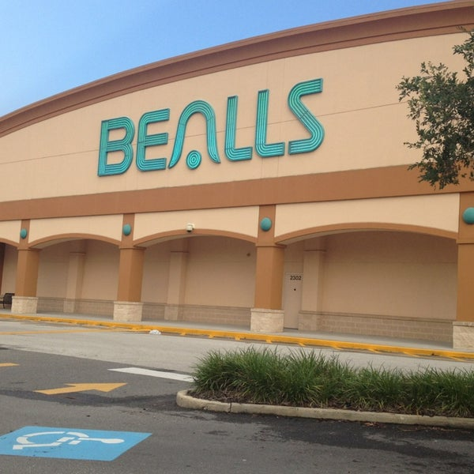

DATA AGGREGATION INTERNSHIP
Self-Help Credit Union
From May 2022-July 2022, I was employed as the Data Aggregation & Research Intern at Self-Help Credit Union! Headquartered in Durham, North Carolina, Self-Help has many branches across the nation, including Jacksonville, FL, where I worked. Self-Help aspires to uphold fair banking practices to its customers, and give those who are less fortunate or targeted by predatory lenders a fair chance at a loan.
Web-Scraping/Programming with C#
My primary role as Data Aggregation Intern was, as expected, to collect data. Specifically, I was
tasked to gather data about local Jacksonville businesses as fast as possible. To do this, I
utilized
the C# language to perform both web-scraping and browser-driving. So essentially, my job was to
create C#
programs that would either analyze publicly accessible HTML and scrape its data, or drive a Chrome
browser
to download publicly accessible data for me.
In total, I gathered the data of over 180,000 local businesses by the internship's end. After this
data
was retrieved and downloaded with C# programs, it needed to be organized. I created another C#
program that would take the scraped/downloaded data and organize it with pre-existing data that the
company
already owned. Duplicates would be filtered out, and all available datafields would be filled in and
uploaded
to a SQL server.
Blazor Website Development
Once data was gathered, organized, and uploaded to a SQL database, my job was to make this data
accessible
to company members in an intuitive form. My boss and I decided on a company-wide website for this
endeavor,
and I chose to use a Blazor Website, which combines C# and HTML with a BootStrap template.
This website was login-protected and allowed Self-Help users with access to view paginated tables of
all
companies whose info had been acquired. 10 companies would display in the table, with their name and
zip code
as a preview. The user could click an "Expand" button to view all the data-fields that had been
gathered.
Users could enter a specific page number to visit if desired, as well.
A crucial aspect of this website's design was its search functionality. Users could search by
company Name,
EIN number, and business type (such as childcare). I also implemented filtering, with a series of
checkboxes. Users
could mark checkboxes such as ZIP codes, nonprofit status whether the company had was female-owned,
et cetera,
to tailor results to what they needed.

SALES ASSOCIATE
Bealls Department Store
From May 2021-July 2021, I worked as a Sales Associate at my local Bealls store! This meant that I
was responsible
for creating a positive shopping experience both at the checkout counter and on the store floor. I
used my customer
service prowess to assist shoppers when they needed help, and make their time at the checkout very
pleasant.
I also assisted in unloading items from delivery trucks, which built in be a great comradery with my
fellow workers,
and I learned how to work with many different types of people in this environment. No matter who I
shared a shift with,
we always got the job done!
My Bealls location announced their closing shortly after I started working there, so I assisted in
many laborious
closing activities such as loading metal displays onto trucks, and consoling customers who were
disappointed about
the closure. I know that being a Sales Associate is largely unrelated to by future in the Computer
Science industry,
but I am proud of my time at Bealls and I believe it solidified my hardworking spirit that persists
no matter the task!
